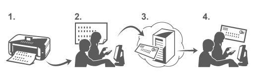

从电子邮件打印可以轻松打印附件文件。从计算机或智能手机将图片或文档附加到电子邮件后发送即可。
您可以轻松地从外部(如旅游目的地)进行打印。此外，您的家人或朋友也可以通过预先注册打印。
可以在支持从电子邮件打印的任何佳能打印机上使用此服务。

检查环境
首先，请检查环境。
-
网络环境
需要将此产品连接到具有Internet连接的LAN。
 重要事项
重要事项-
用户需要承担Internet访问费用。
-
某些国家/地区可能无法使用此功能。
-
打印机软件(固件)版本
如果打印机的固件版本早于Ver. 2.000，您需要更新固件。
有关更新的分步说明，请参阅“更新程序”。
使用从电子邮件打印的准备工作
若要使用从电子邮件打印，您需要通过输入有关打印机所有者的信息来注册打印机。
-
打印打印机注册页面的URL和PIN编码
-
访问该URL并输入所有者的电子邮件地址和所需的其他信息
-
检查电子邮件是否已发送到您输入的电子邮件地址
-
访问电子邮件中提供的URL，并完成打印机注册过程
 注释
注释-
当您完成注册时显示在屏幕上的电子邮件地址是只用于从电子邮件打印功能的电子邮件地址。

从您的计算机或智能手机打印
-
准备要打印的文件
下面提供了此打印功能支持的文件格式、文件数量和文件大小。
支持的文件格式
-
Adobe PDF文件
-
JPEG文件
重要事项-
只能打印附加到电子邮件的文件。 无法打印电子邮件。
-
无法打印加密的Adobe PDF文件、受密码保护的文件和设置为禁止打印的文件。
-
无法打印压缩的文件附件。
-
无法打印Adobe PDF文件和JPEG文件以外的文件。
支持的文件数量和文件大小
-
最多可以打印10个附件文件。
-
具有附件文件的电子邮件大小不超过5MB。
注释-
电子邮件的大小基于整个传输文件(包括电子邮件和标头)来确定。
所以，有时虽然附件文件的大小未超过5MB，仍无法打印附件文件。 -
如果附加的JPEG文件小于10KB，无法打印该文件。
-
-
将要打印的文件从您的计算机或智能手机附加到电子邮件，并发送到用于打印的电子邮件地址
也可以通过选择
 Web服务 → Web服务设置 → 云设置 → 从电子邮件打印设置 → 检查打印地址从操作面板检查打印地址。
重要事项
Web服务 → Web服务设置 → 云设置 → 从电子邮件打印设置 → 检查打印地址从操作面板检查打印地址。
重要事项-
在此服务维护期间，您将无法使用此服务。
-
多人使用此服务
若要允许多个用户使用此功能，请将用户注册为成员(而不是打印机所有者)。
-
打印机所有者使用自己的计算机或智能手机来访问该服务的登录URL(https://pr.mp.c-ij.com/po)并登录
-
选择要添加成员的打印机名称。单击成员设置 → 添加以输入成员的电子邮件地址，并单击注册
成员注册页面的URL将发送到新注册成员的电子邮件地址。
-
注册的成员访问在电子邮件中包含的URL，并完成注册
您可以从注册的电子邮件地址使用此服务。
注释-
您最多可以注册500个成员。
无法打印文档
如果文档未打印，请检查以下各项：
-
确认打印机电源已开启。
如果打印机电源已打开，则关闭电源并重新打开，然后检查问题是否已解决。 -
确认打印机已连接到网络。
-
确认打印机已连接到具有Internet连接的LAN。
-
查看打印机操作面板并确认没有显示所有错误消息。
如果问题依然存在，请使用计算机上的打印机驱动程序执行打印并检查文档是否可在打印机上正常打印。
如果无法打印文档，请参阅打印机附带的屏幕手册(操作说明)。 -
检查附加到电子邮件的文件是Adobe PDF文件或JPEG文件。
-
从打印机操作面板选择
Web服务 → Web服务设置 → 云设置 → 从电子邮件打印设置 → 检查打印地址，检查发送接收方的电子邮件地址是否正确。
-
确认使用此服务的用户的电子邮件地址已注册。
如果要检查错误详细信息，打印机所有者需要访问登录URL(https://pr.mp.c-ij.com/po)。 -
在打印状态屏幕中，单击转到打印历史记录屏幕，并检查发送的作业的历史记录。 您可以查看错误的详细信息。
如果要检查错误详细信息，打印机所有者需要访问登录URL(https://pr.mp.c-ij.com/po)。
注释-
对于无线LAN连接，打开打印机电源后可能需要等待几分钟才能通信。 确认打印机连接到了无线LAN，然后尝试打印。
如果无法注册到该服务或删除该服务
如果您无法注册到服务
-
如果打印机操作面板显示消息“注册“从电子邮件打印”失败。”，可能是从电子邮件打印注册尚未完成。 选择OK以取消显示该错误，并再次从头开始。
-
确认打印机的固件版本已更新。
如果您未通过电子邮件收到用于完成注册的URL
-
可能输入了错误的电子邮件地址。 等待约30分钟，并操作打印机操作面板以打印打印机注册URL和PIN编码。 然后从头重新注册。
如果您无法删除服务
-
如果打印机操作面板上显示消息“连接“从电子邮件打印”失败。 仅本打印机上的信息被删除。” ，可能是该服务上的注册信息无法删除(即使在此计算机上存储的从电子邮件打印信息已删除)。
选择OK以取消显示该错误，然后访问该服务的登录URL(https://pr.mp.c-ij.com/po)以删除注册信息。 -
如果即使删除了该服务的注册信息，也无法删除本打印机中存储的从电子邮件打印信息，请选择
Web服务 → Web服务设置 → 云设置 → 从电子邮件打印设置 → 取消注册已注册打印机删除注册信息。
如果在维修打印机之后无法打印
重新注册打印机和打印机所有者
-
维修打印机后，会删除所有注册的信息并且无法再使用从电子邮件打印。
如果要重新使用该服务，必须重新注册打印机和打印机所有者。
有关重新注册步骤的信息，请参见“使用从电子邮件打印的准备工作”。
如果已将所有者以外的用户注册为成员，请从此处开始重复注册步骤。
商标
-
Windows是Microsoft Corporation在美国和/或其他国家/地区的商标或注册商标。
-
Windows Vista是Microsoft Corporation在美国和/或其他国家/地区的商标或注册商标。
-
Mac OS、Bonjour、iPad、iPhone、iPod touch和Safari是Apple Inc.在美国和其他国家/地区的注册商标。 AirPrint和AirPrint徽标是Apple Inc.的商标
-
IOS是Cisco在美国和其他国家/地区的商标或注册商标，在许可下使用。
-
本指南中提及的所有其他公司名称和产品均为其各自公司的商标或注册商标。